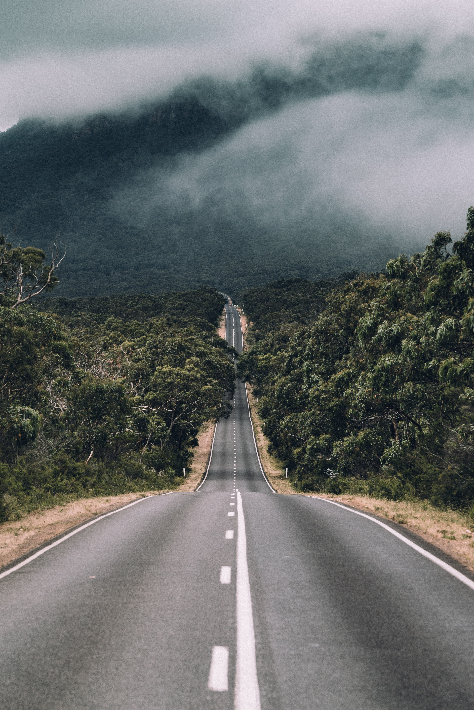
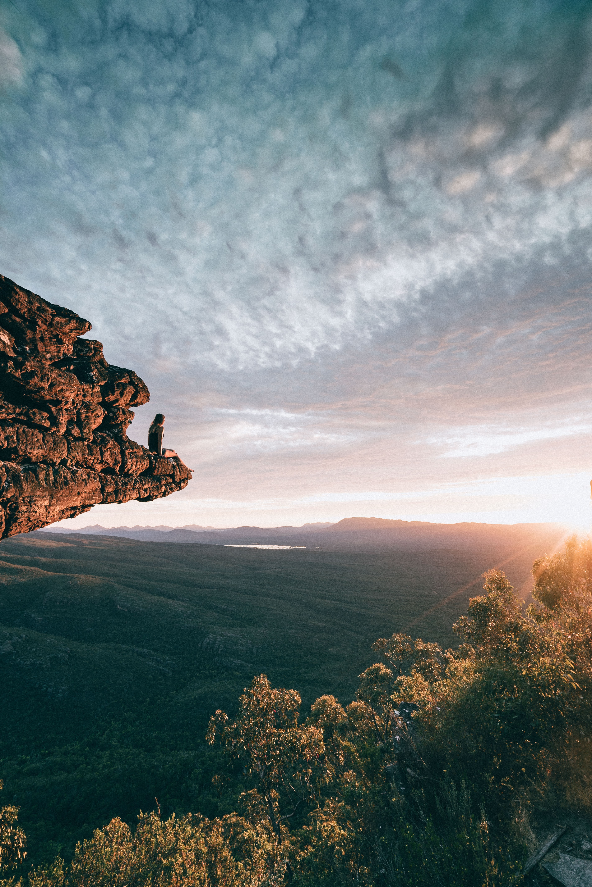
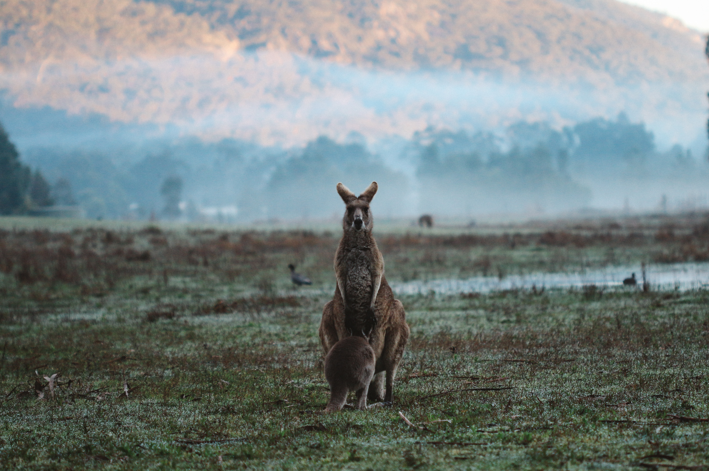

The Grampians National Park (also Gariwerd), commonly referred to as The Grampians, is a national park located in the Grampians region of Victoria, Australia. The 167,219-hectare (413,210-acre) national park is situated between Stawell and Horsham on the Western Highway and Dunkeld on the Glenelg Highway, 260 kilometres (160 mi) west of Melbourne and 460 kilometres (290 mi) east of Adelaide. Proclaimed as a national park on 1 July 1984, the park was listed on the Australian National Heritage List on 15 December 2006 for its outstanding natural beauty and being one of the richest indigenous rock art sites in south-eastern Australia.The Grampians feature a striking series of sandstone mountain ranges.
The general form that the ranges take is: from the west, a series of low-angled sandstone ridges running roughly north-south. The eastern sides of the ridges, where the sedimentary layers have faulted, are steep and beyond the vertical in places - notably at Hollow Mountain near Dadswells Bridge at the northern end of the ranges. The most popular walking area for day trippers is the Wonderland area near Halls Gap. In summer the ranges can get very hot and dry. Winter and spring are the best times for walking. The Wonderland area is also host to "The Grand Canyon" on the "Wonderland Loop" on one of the tracks to the "Pinnacle". In spring, the Grampians wildflowers are an attraction. The area is a rock climbing destination, and it is visited by campers and bushwalkers for its many views and its natural environment.
The Grampians Region is home to one of Australia's longest running food and wine festivals, Grampians Grape Escape, held over the first weekend of May in Halls Gap every year. Launched in 1992, the Grampians Grape Escape is a hallmark event for Victoria and provides food and wine offerings by more than 100 local artisan producers, live music and family entertainment.
The general form that the ranges take is: from the west, a series of low-angled sandstone ridges running roughly north-south. The eastern sides of the ridges, where the sedimentary layers have faulted, are steep and beyond the vertical in places - notably at Hollow Mountain near Dadswells Bridge at the northern end of the ranges. The most popular walking area for day trippers is the Wonderland area near Halls Gap. In summer the ranges can get very hot and dry. Winter and spring are the best times for walking. The Wonderland area is also host to "The Grand Canyon" on the "Wonderland Loop" on one of the tracks to the "Pinnacle". In spring, the Grampians wildflowers are an attraction. The area is a rock climbing destination, and it is visited by campers and bushwalkers for its many views and its natural environment.
As at the 2016 Australian census, the Grampians region had a population of 236,739, with almost half of the population located in the City of Ballarat. The principal centres of the region, in descending order of population, are Ballarat, Bacchus Marsh, Horsham, Ararat, and Stawell.

The iconic and spectacular MacKenzie Falls is a must do for all visitors to Grampians National Park. MacKenzie Falls is one of the largest waterfalls in Victoria. Flowing year round, the falls sees water cascade over huge cliffs into a deep pool, sending fine sprays of rainbow mist high into the air above a stunning gorge. To see the falls, take the easy, one-kilometre path to the viewing platform at the Bluff (wheelchair accessible), or the steep trail to the base of the falls (30 minutes one way).
The walking track to the bottom of MacKenzie Falls is steep, but well worth the effort. The walk is 2 km return and includes a large section of steep steps as you make your way down into the gorge to the base of the falls. A viewing platform over Broken Falls is located before the walk heads down the steps - wheelchairs and prams can access the Broken Falls viewing platform, but no further.
One of the most bio-diverse regions of Victoria, the Grampians National Park is often called the ‘Garden of Victoria’ and is home to one third of the state’s flora. The subalpine forest, heathlands, swamp, subalpine forest and riverine landscapes in the Grampians region also support a wide range of wildlife including plenty of iconic Australian fauna. Whilst it’s common to spot a koala, emu, kangaroo, wombat, echidna or platypus on one of our Grampians day tours, this week we thought we’d take a look at some of the lesser known flora and fauna that are unique to the Grampians region.